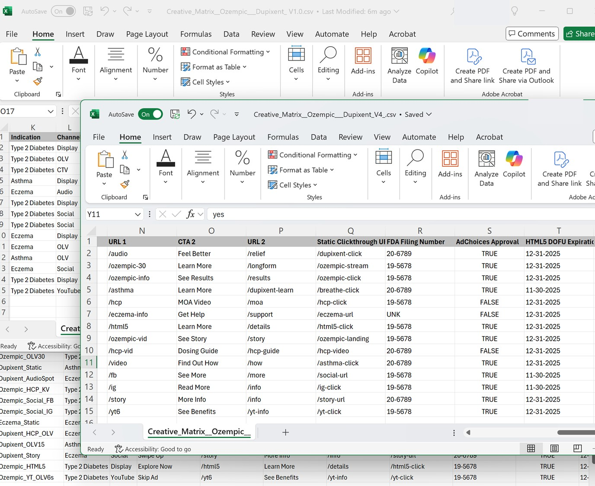

Agencies are still juggling Excel files, naming conventions, and trafficking templates — just to launch a campaign.
dataraiils ends that chaos with a single, automated system.
AI classifies the files and pulls in key metadata.

Auto-naming, spec checks, and compliance logic—no guesswork.

Trafficking sheets, asset links, and previews—ready to send.

The Old Way
The dataraiils Way
We replace manual ad trafficking processes with AI. Our platform auto-tags assets, validates spec logic, and packages them for launch.
We’re built for creative AORs, production leads, and operators who are still stuck managing Excel sheets and naming conventions.
No. dataraiils is privacy-first. We don’t retain your creative files or metadata once processing is complete.
We generate output files for CM360, DV360, Meta, YouTube, and custom sheets depending on your workflow needs.